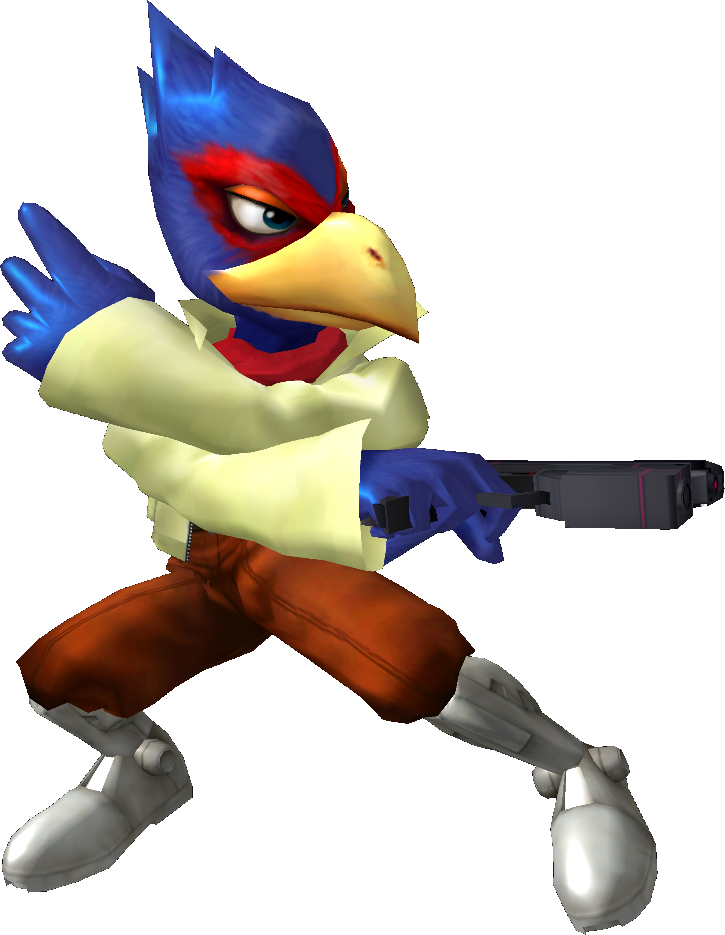

|  | Rank 2nd of tier list : FALCO |
| Weight | |
|---|---|
| 20-21st heaviest | |
| Shield stats | |
| Roll lenght | 6th longest |
| Shield size | 10-12th biggest |
| Grab range | 10th longest |
| Wavedash lenght | 14th longest |
| Movement stats | |
| Walking speed | 3rd fastest |
| Turning speed | 8th fastest |
| Running speed | 11th fastest |
| Aerial stats | |
| Jump squat | 6 frames (16th fastest) |
| Short hop | 26th highest |
| Aerial speed | 25th fastest |
| First jump height | 1st highest |
| Seconde jump height | 5th highest |
| Total jump height | 4-5th highest |
| Average fall speed | 1st fastest |
| Fast falling speed | 1st fastest |
| Falling speed | 1st fastest |
| Ledge stats | |
| 0-99% ledge roll | 8th longest |
| 100%+ ledge roll | 10th longest |
| 0-99% ledge attack range | 4th farthest |
| 100%+ ledge attack range | 18th farthest |
| Intangible ledgedash (Optimal/Perfect) | 14/15 frames |
| Notable players | |
| Mango, Westballz, Zhu, PPMD, Axe | |
| Smashboard forum | |
| http://smashboards.com/forums/falco.111/ | |
| Falco tutorials | |
| http://bit.ly/1RCpwrl | |
| https://youtu.be/RkUfAtXnNAU | |
| https://youtu.be/Rqw5wRh2E88 | |
| https://youtu.be/yLa6jCtQrVQ | |
| Technique guide | |
| https://youtu.be/gQz5kMOTBPU | |
Falco is an unlockable character in Super Smash Bros. Melee who is currently 2nd in the tier list due to good ability to combo, and having arguably the best projectile in the game. Top Falco players are notorious for their high levels of technical ability.
Due to Falco's fast falling, he has resistance to juggling, is hard to hit in the air, and can perform SHFFLs well. On the downside, his recovery is shortened, and he is vulnerable to combos and chaingrabs that work on Fast fallers. However, he can chaingrab floaties.
Falco's excellent short hop lasers prevent most characters from approaching and can increase pressure on the opponent His Reflector not only reflects projectiles, but can also be used for combo opportunityies like pillaring. Falco also has the highest initial jump, the ability to wall jump, and a very effective Down Aerial spike.
Like Fox, Falco is lightweight and has a very poor recovery. Not only does he have the aforementioned fast-falling problem, but also the slowest air speed, along with Fox. Falcos Up Special Move, Fire Bird is very easy to edgeguard, due to its large start-up lag and linear nature. Additionally, it also lacks the flinching effect during the charge-up time and recovery distance of Fox's, His Side Special Move, Falco Phantasm, is difficult to shorten consistently, but is faster at recovering than Fox's Fox Illusion.